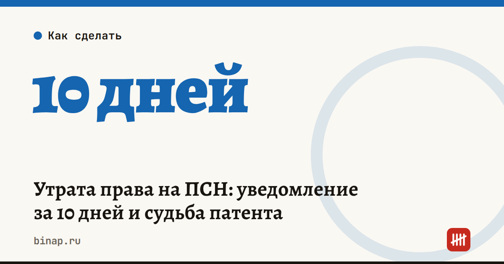

Утрата права на ПСН: уведомление за 10 дней и судьба патента

Если ИП потерял право на патент, ФНС нужно уведомить в течение 10 календарных дней. Оплаченный патент не пропадает, но его не вернут.
Что это значит: - Основания (п. 6 ст. 346.45 НК РФ): выручка по всем патентам выше лимита (в статье названо 20 млн ₽ за 2026 год), несоблюдение требований ст. 346.43, продажа товаров не в рознице. - Право теряется с начала периода, на который выдан патент, и не зависит от даты уведомления. ИП переходит на ОСНО либо на УСН или ЕСХН, если подавал заявление. - Форма уведомления — № 26.5-3 (КНД 1150025), приказ ФНС ЕД-7-3/1275@ от 26.12.2025, с 06.03.2026. Подаётся лично, через представителя или по ТКС, в любую инспекцию, где ИП стоит на учёте как плательщик ПСН. - Оплаченный до даты утраты патент не возвращается и не засчитывается в другие налоги, но уменьшает НДФЛ, УСН или ЕСХН за период утраты. Неоплаченные части аннулируются. - Пример из письма ФНС: патент 90 000 ₽; потеря права 01.07.2026; из первого платежа 30 000 ₽ зачтено 20 000 ₽ — они уменьшат налог УСН, остаток 10 000 ₽ и платёж 60 000 ₽ аннулированы. - Разъяснение ФНС согласовано с Минфином (письмо от 23.09.2026 № 03-11-09/83676).
Что сделать сейчас: - Следите за выручкой по всем патентам: лимит 20 млн ₽. - При потере права подайте уведомление в течение 10 дней. - Проверьте настройки системы налогообложения в кассе и обязанность по НДС при переходе на ОСНО.
Частые вопросы Вернут ли деньги за патент? Нет, оплаченное уменьшает налог по новому режиму.
Что с неоплаченными платежами? Те, что наступают после даты утраты, аннулируются.